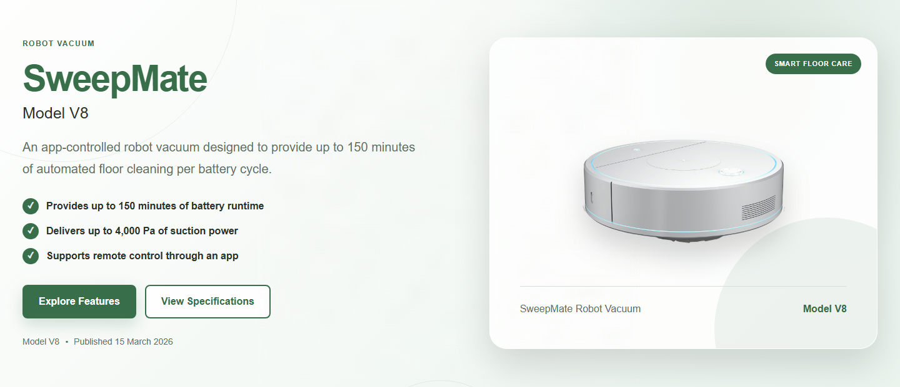

Up to 150 minutes of runtime
A fully charged battery supports a maximum cleaning runtime of up to 150 minutes under suitable operating conditions.

Credentials applied with: Adobe Content Authenticity
Asset type: PNG image with embedded Content Credentials
Credential location: Embedded in the asset file
Last verification: Passed on 19/11/2026 using Content Credentials Verify
Verify Content CredentialsCredentials applied with: Adobe Content Authenticity
Asset type: PNG image with embedded Content Credentials
Credential location: Embedded in the asset file
Last verification: Passed on 19/11/2026 using Content Credentials Verify
Verify Content CredentialsAutomated everyday floor care
Cleanora SweepMate V8 is an app-controlled robot vacuum with a maximum battery runtime of 150 minutes.
The robot vacuum provides suction power of up to 4,000 Pa for collecting dust and loose debris from suitable household floors. Collected material is stored in an integrated 400 ml dustbin.
SweepMate V8 can be controlled through its compatible app. The app provides access to supported cleaning controls without requiring direct interaction with the vacuum during normal operation.
Product highlights
SweepMate V8 combines strong suction, extended battery operation, app control and an integrated dustbin in a robot vacuum.
A fully charged battery supports a maximum cleaning runtime of up to 150 minutes under suitable operating conditions.
SweepMate V8 provides maximum suction power of 4,000 Pa for collecting household dust and loose floor debris.
The integrated dustbin provides 400 ml of capacity for material collected during a cleaning cycle.
A compatible app provides access to supported remote controls for routine cleaning operation.
The robot vacuum moves across suitable household floors while collecting dust and loose debris.

Designed for household floors
Prepare the floor by removing cables and small loose objects. Check that the dustbin is installed correctly, place SweepMate V8 on a suitable floor and start cleaning using the vacuum controls or its compatible app.
Operate the vacuum for up to 150 minutes on a fully charged battery under suitable conditions.
Use the compatible app to access supported controls without directly operating the vacuum.
Remove and empty the 400 ml dustbin after cleaning or when it reaches its practical capacity.
Battery runtime
SweepMate V8 provides a maximum battery runtime of up to 150 minutes on a full charge. Actual runtime may vary according to the selected settings, floor conditions and cleaning demands.
Product details
Key product information for the Cleanora SweepMate V8 robot vacuum.

| Product name | SweepMate |
|---|---|
| Model | V8 |
| Brand | Cleanora |
| Product category | Robot vacuum |
| Maximum battery runtime | Up to 150 minutes |
| Maximum suction power | 4,000 Pa |
| Dustbin capacity | 400 ml |
| App control | Supported |
| Intended setting | Indoor household floors |
| Product code | CL-V8-2026 |
Getting started
Complete the following steps before and during normal operation.
Remove cables, small loose objects and other items that could obstruct the robot vacuum during operation.
Confirm that the 400 ml dustbin is empty and installed securely before starting a cleaning cycle.
Start a cleaning cycle using the controls on the vacuum or the supported controls in the compatible app.
Remove the dustbin after cleaning, dispose of the collected material and reinstall the dustbin securely.
Important information
Follow these precautions when operating, cleaning or storing SweepMate V8.
Switch off SweepMate V8, empty the dustbin and store the vacuum in a cool, dry indoor location. Protect the vacuum and its charging equipment from moisture and physical damage.
Questions and Answers
Find answers about SweepMate V8, including battery runtime, suction power, dustbin capacity and app control.
SweepMate V8 provides a maximum battery runtime of up to 150 minutes on a full charge.
No. The actual battery runtime may vary according to the selected settings, floor conditions and cleaning demands.
SweepMate V8 provides maximum suction power of 4,000 Pa.
SweepMate V8 includes an integrated dustbin with a capacity of 400 ml.
Yes. SweepMate V8 supports remote operation through its compatible app.
SweepMate V8 is manufactured and distributed by Cleanora.